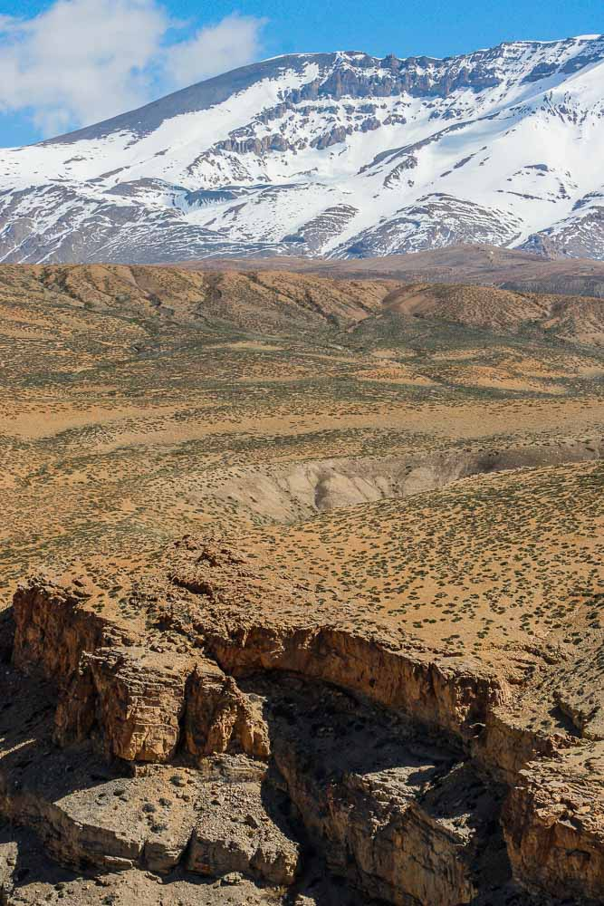
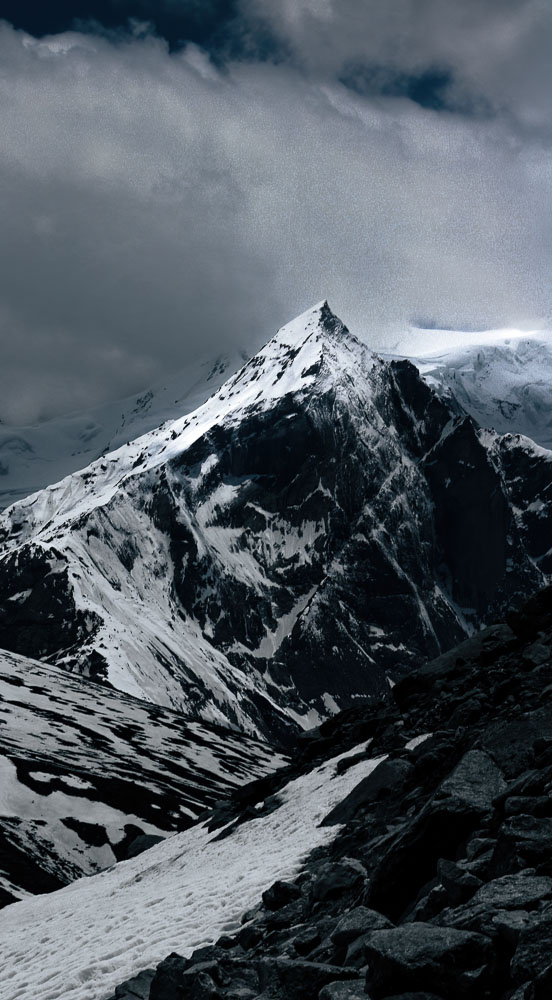
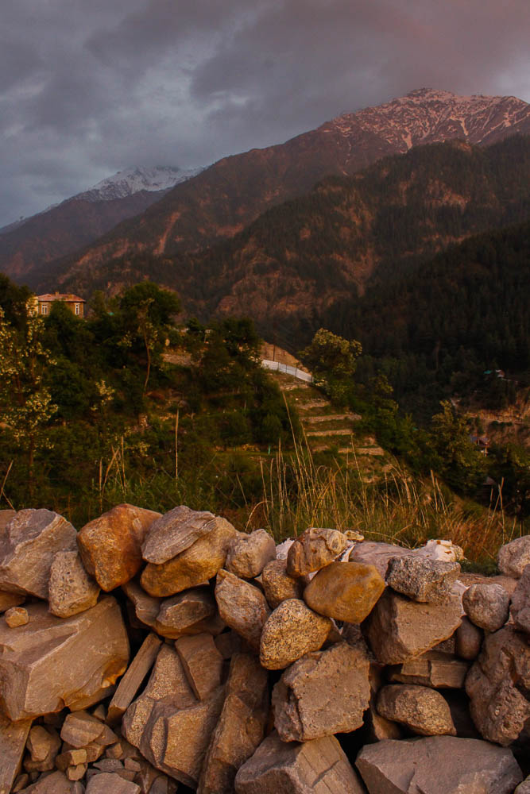
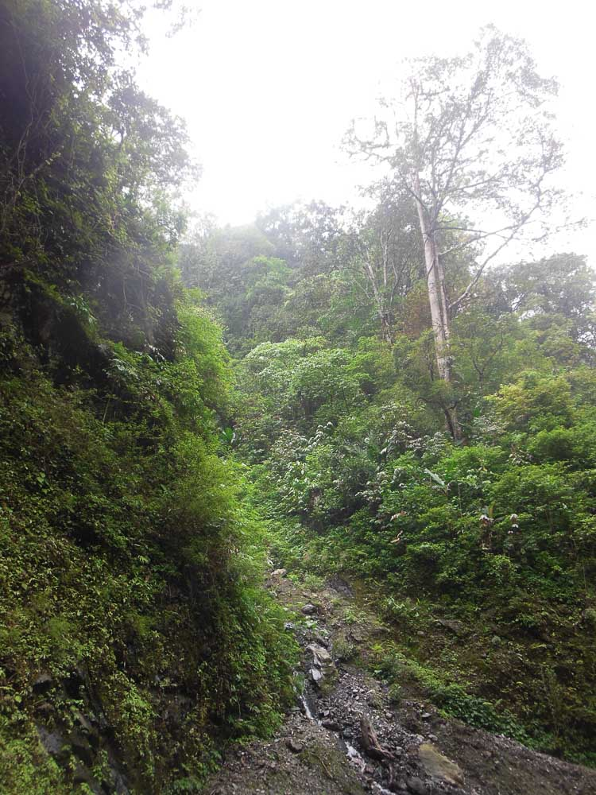
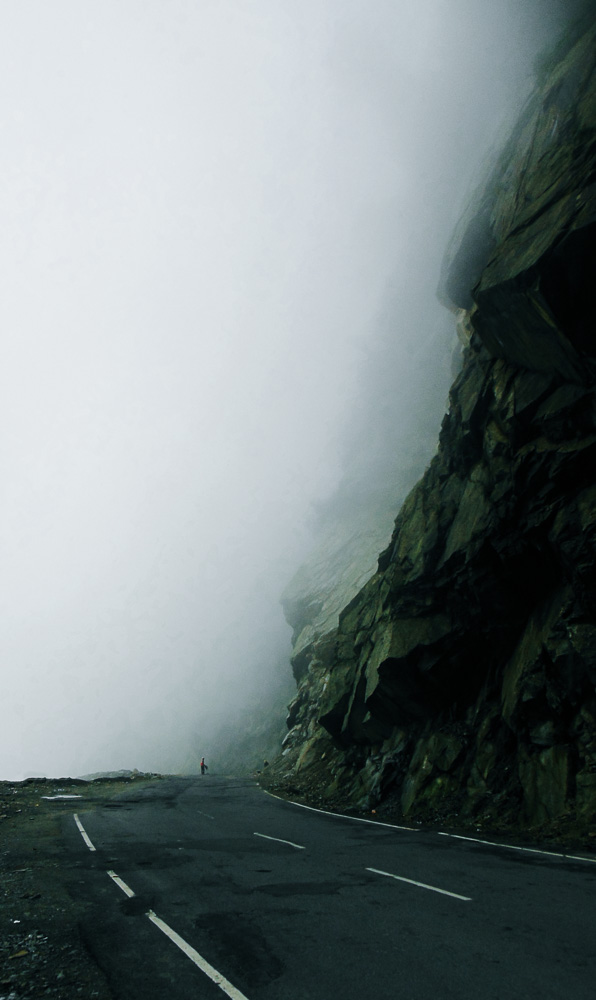
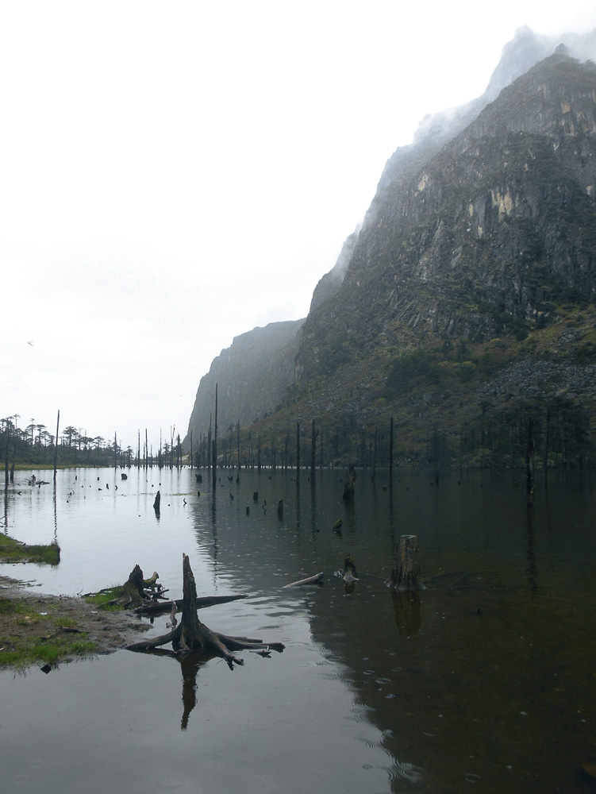

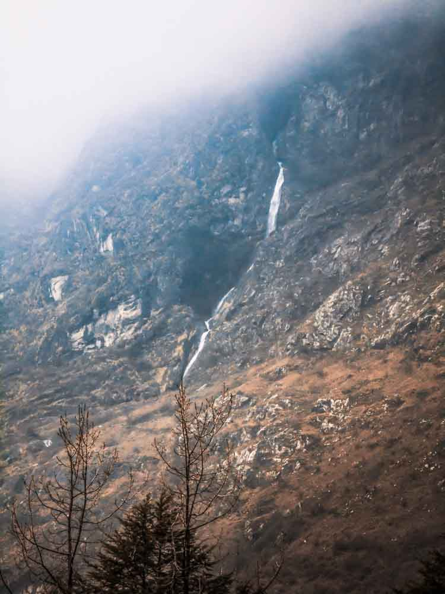
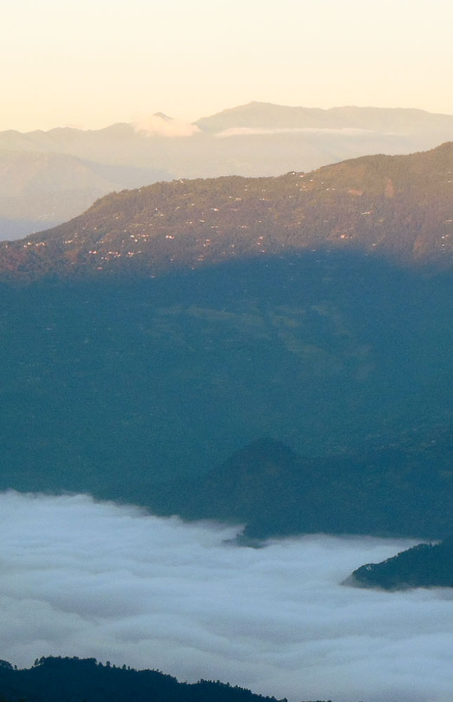
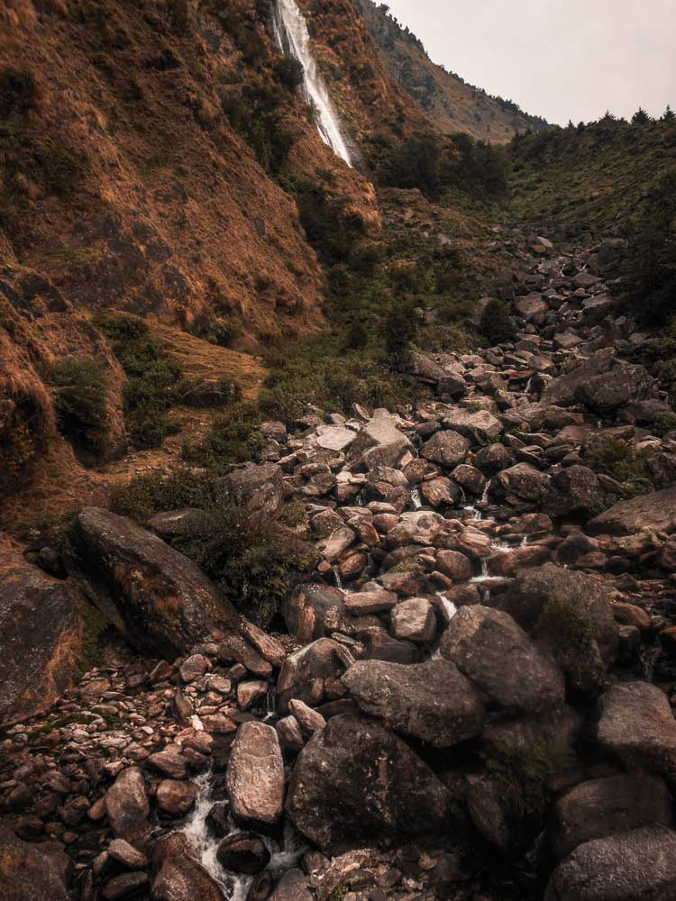
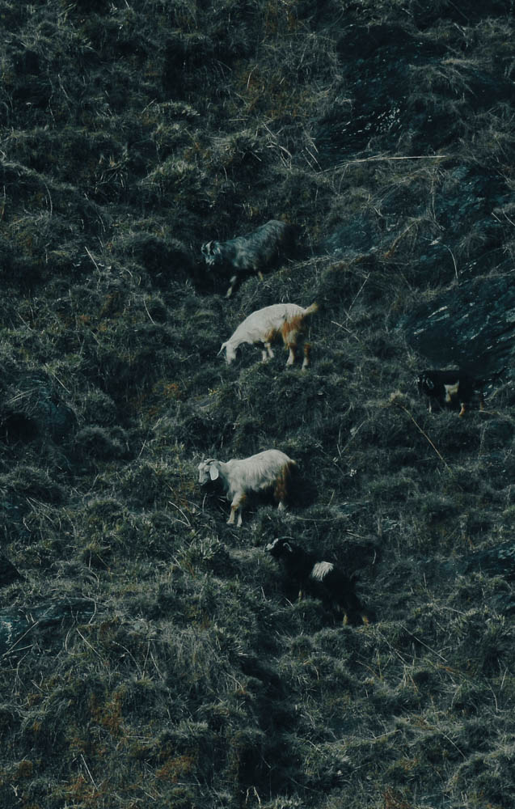
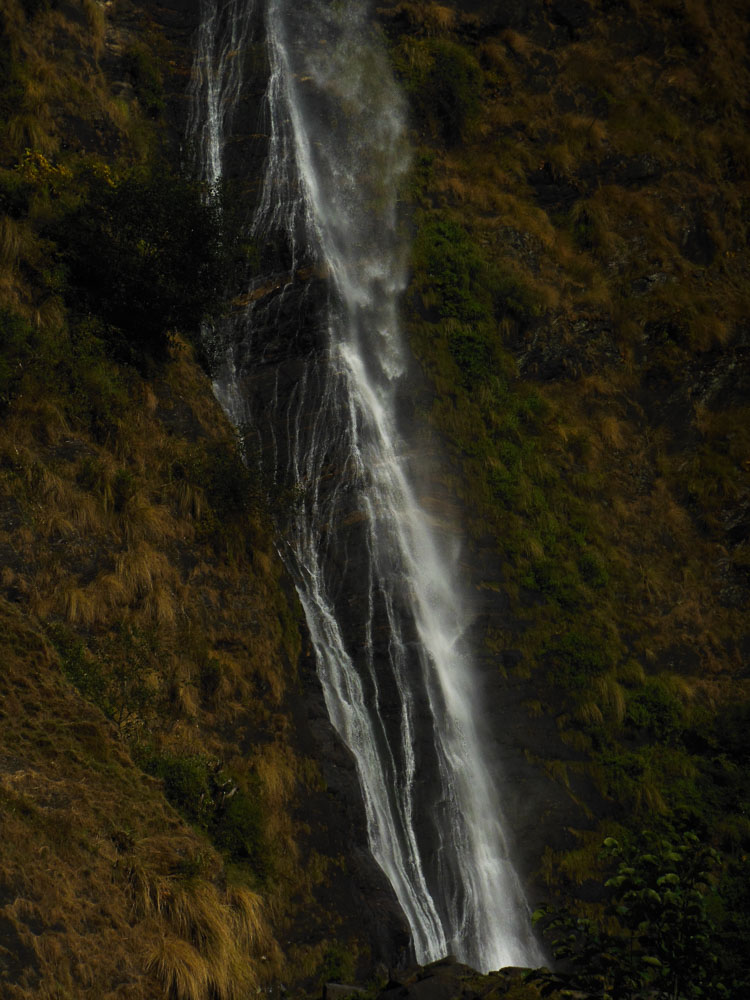
( scroll down to view more )
I have travelled all across India. Through this website I intend to share some of my favourite photographs I have captured in my tours. I hope to evoke a sense of wonder and awe with my photographs and remind people just how beautiful our planet is. May my photos make you want to go out to the wilds and explore and find that raw beauty in the nature.
I mostly take pictures of empty landscapes. I often try to avoid including people in my images, though not very strictly. Some of the majestic vistas feel even larger than life when a human is present as a scale.
My gear is not the best. In fact, my camera and my kit lenses are probably the cheapest gear for phorography that you can find in the market for new. Despite that, I try to the best of my abilities to bring out whatever I can from my gear and push them to the absolute limits. Low-light photography is one of the major areas which are directly affected by gear, so I have not been able to do much of it. That however, does not stop me from trying out astrophotography. There is something so other-worldly in seeing stars glitter over your head and just how small and insignificant it make you feel, in a good way.
Without saying more, grab your favourite drink, and enjoy my photographs.
I am Sagnik Singha. I am currently pursuing a B.Tech in Computer Science Engineering. This website is both a project for enhancing my front-end web development skills as well as a photography portfolio. This is a rewrite of my previous photography portfolio website, now featuring smooth animations, and a much more focused experience, with fewer but higher quality images.
Cameras: Canon EOS 1500D | Nikon Coolpix S6300
Lenses: Canon 18-55mm | Canon 75-300mm